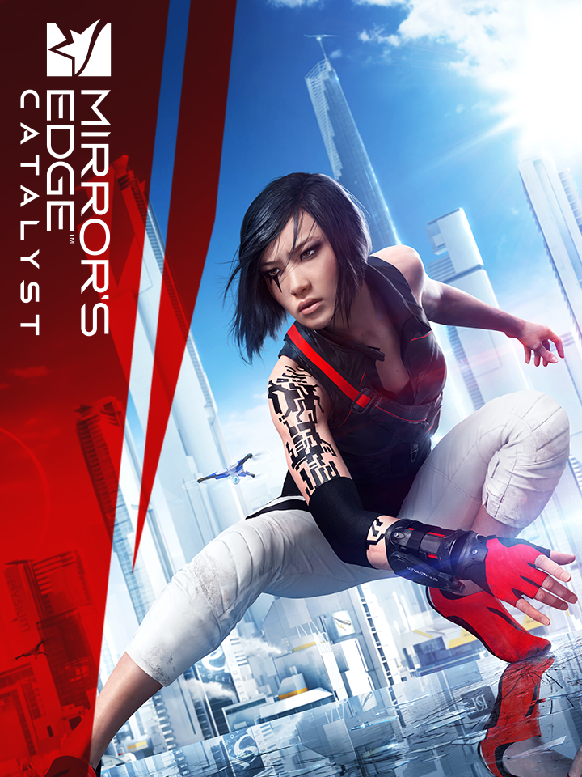

Mirror's Edge Catalyst
Mirror's Edge Catalyst
Detalhes
 |
|
| Tempo de jogo | 4h 56m 0s |
| Última Atividade | 18/05/2023 21:36:57 |
| Adicionado | 07/06/2026 0:35:52 |
| Modificado | 07/06/2026 0:46:26 |
| Status de Conclusão | Jogado |
| Biblioteca | Steam |
| Fonte | Steam |
| Plataforma | PC (Windows) |
| Data de Lançamento | 07/06/2016 |
| Pontuação da Comunidade | 70 |
| Avaliação da crítica | 69 |
| Pontuação do Usuário | |
| Gênero | Adventure Platform |
| Desenvolvedor | EA Digital Illusions CE |
| Editor | Electronic Arts |
| Funções | Multiplayer Single Player |
| Links | Official Website Wikipedia Steam Twitch Subreddit Community Wiki Playstation Xbox Epic |
| Tag | |
Descrição
OS RECURSOS ONLINE DESTE TÍTULO FORAM ENCERRADOS.
Siga Faith, uma ousada corredora livre, na luta por liberdade na cidade de Glass. O que por fora parece ser uma metrópole elegante e tecnológica guarda um segredo terrível nas suas entranhas. Explore cada canto, dos telhados bem-iluminados de arranha-céus aos túneis escuros do subterrâneo. A cidade é enorme e pode ser explorada livremente, com Faith no centro de tudo. Por meio da perspectiva em primeira pessoa, combine os movimentos ágeis e as habilidades avançadas de combate de Faith para dominar o ambiente da cidade e desvendar a conspiração.

TRANSVERSAL
Atinja a velocidade máxima ao descer rapidamente de tirolesa. Equilibre-se em canos, pendure-se e escale, alternando as mãos, por baixo de um obstáculo. Corra verticalmente e horizontalmente em qualquer parede e use o ambiente para balançar em cantos ou atravessar fendas.
FOCO
Rápida, leve e ágil, Faith precisa manter o foco e usar seus movimentos para sobreviver. O Foco é obtido ao correr livremente, e quando Faith tem Foco, inimigos não podem acertá-la. Como ela perde foco quando está em baixa velocidade ou é atacada, é essencial manter o equilíbrio entre desviar de adversários e enfrentá-los diretamente.
IMPULSO
Ganhe impulso para fazer saltos ousados entre telhados ou escorregar com estilo por espaços apertados. Use o novo movimento Desviar para ganhar um pequeno impulso de aceleração em qualquer direção. Para uma rápida mudança de planos, altere a direção com Virar Rápido para dar uma volta de 180 ou 90 graus.
COMBATE
Realize ataques fortes transversais devastadores, jogando adversários contra paredes, sobre grades e contra os outros. Use o impulso para passar pela KrugerSec, combinando uma série de ataques leves transversais, ganhando foco e mantendo a velocidade. Engane adversários, desviando para trás e dando um chute nas costas deles. Também é possível desorientar adversários com socos rápidos e desviar para longe do perigo, evitando um revide ou contra-ataque.
DISPOSITIVOS
As habilidades de corrida, o conhecimento de artes marciais e a determinação de Faith são ampliados com equipamentos usados para atravessar a cidade e combater a opressão que afeta o povo de Glass.
CORRIDAS E CONTRA O RELÓGIO
Você consegue correr mais rápido que todo mundo na cidade de Glass? Crie as próprias corridas Contra o Relógio e compartilhe-as com amizades. Você também pode encarar Corridas desafiadoras criadas pela DICE e buscar a melhor rota possível usando seus movimentos fluidos. Para uma emocionante caça ao tesouro na cidade, posicione um geoBeat em um lugar difícil de alcançar para que suas amizades tentem encontrar.
Siga Faith, uma ousada corredora livre, na luta por liberdade na cidade de Glass. O que por fora parece ser uma metrópole elegante e tecnológica guarda um segredo terrível nas suas entranhas. Explore cada canto, dos telhados bem-iluminados de arranha-céus aos túneis escuros do subterrâneo. A cidade é enorme e pode ser explorada livremente, com Faith no centro de tudo. Por meio da perspectiva em primeira pessoa, combine os movimentos ágeis e as habilidades avançadas de combate de Faith para dominar o ambiente da cidade e desvendar a conspiração.
TRANSVERSAL
Atinja a velocidade máxima ao descer rapidamente de tirolesa. Equilibre-se em canos, pendure-se e escale, alternando as mãos, por baixo de um obstáculo. Corra verticalmente e horizontalmente em qualquer parede e use o ambiente para balançar em cantos ou atravessar fendas.
FOCO
Rápida, leve e ágil, Faith precisa manter o foco e usar seus movimentos para sobreviver. O Foco é obtido ao correr livremente, e quando Faith tem Foco, inimigos não podem acertá-la. Como ela perde foco quando está em baixa velocidade ou é atacada, é essencial manter o equilíbrio entre desviar de adversários e enfrentá-los diretamente.
IMPULSO
Ganhe impulso para fazer saltos ousados entre telhados ou escorregar com estilo por espaços apertados. Use o novo movimento Desviar para ganhar um pequeno impulso de aceleração em qualquer direção. Para uma rápida mudança de planos, altere a direção com Virar Rápido para dar uma volta de 180 ou 90 graus.
COMBATE
Realize ataques fortes transversais devastadores, jogando adversários contra paredes, sobre grades e contra os outros. Use o impulso para passar pela KrugerSec, combinando uma série de ataques leves transversais, ganhando foco e mantendo a velocidade. Engane adversários, desviando para trás e dando um chute nas costas deles. Também é possível desorientar adversários com socos rápidos e desviar para longe do perigo, evitando um revide ou contra-ataque.
DISPOSITIVOS
As habilidades de corrida, o conhecimento de artes marciais e a determinação de Faith são ampliados com equipamentos usados para atravessar a cidade e combater a opressão que afeta o povo de Glass.
CORRIDAS E CONTRA O RELÓGIO
Você consegue correr mais rápido que todo mundo na cidade de Glass? Crie as próprias corridas Contra o Relógio e compartilhe-as com amizades. Você também pode encarar Corridas desafiadoras criadas pela DICE e buscar a melhor rota possível usando seus movimentos fluidos. Para uma emocionante caça ao tesouro na cidade, posicione um geoBeat em um lugar difícil de alcançar para que suas amizades tentem encontrar.